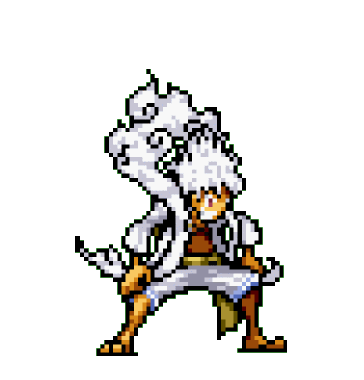

-
Luffy #001
- Capitão
Ele é o capitão dos piratas do chapéu de palha, uma tripulação de piratas que viajam pelo mundo em busca de aventuras e tesouros. luffy é conhecido por sua personalidade alegre e despreocupada, bem como por sua determinação e senso de justiça inabalável..
-
Sanji #002
- Cozinheiro
Sanji é um cozinheiro talentoso e é responsável por preparar as refeições da tripulação. Ele é conhecido por sua habilidade em artes marciais, especialmente em chutes, e é frequentemente retratado fumando um cigarro. Sanji é um personagem muito carismático, com uma personalidade romântica e gentil com as mulheres, porém um tanto grosseiro com os homens. Ele é um personagem complexo e muitas vezes lida com conflitos internos devido ao seu passado e suas crenças pessoais.
-
chopper #003
- Médico
Tony Tony Chopper é um personagem original do anime e mangá One Piece. Ele é o médico da tripulação dos Piratas do Chapéu de Palha. Chopper é uma rena que, após comer a Hito Hito no Mi, adquiriu a habilidade de se transformar e raciocinar como os humanos.
-
Zoro #004

- Espadachim
Zoro é conhecido como O Caçador de Piratas, é um pirata e ex-Caçador de Recompensas, e também um espadachim que usa 3 espadas. Ele foi o primeiro membro a se juntar aos Piratas do Chapéu de Palha, e até o momento, é considerado a maior ameaça e membro mais perigoso depois de Luffy e o imediato do bando.
-
Nami #005
.gif)
- Navegadora
Nami é uma navegadora talentosa e inteligente que viaja com o bando de piratas do Chapéu de Palha, liderados por Monkey D. Luffy. Ela é conhecida por ser uma ladra habilidosa e possui uma personalidade forte e determinada.
-
Robin #006

- Arqueóloga
Robin é uma arqueóloga extremamente talentosa que se juntou à tripulação dos Piratas do Chapéu de Palha. Ela é conhecida por sua beleza, inteligência e habilidades de combate.
-
Frank #007

- Carpinteiro
Franky é conhecido por seu corpo mecânico, construído com tecnologia avançada e habilidades de engenharia, que lhe permitem se transformar em uma variedade de formas diferentes. Ele também é conhecido por seu estilo de luta poderoso e único, que combina suas habilidades mecânicas com suas técnicas de luta.
-
Brook #008
- Músico
Brook é um esqueleto humano com um senso de humor peculiar e muita classe. Ele é um músico talentoso e toca um violino que é sua arma de escolha em batalha. Brook se juntou aos Piratas do Chapéu de Palha após ser ressuscitado por sua habilidade única de fruta do diabo, que o permitiu voltar à vida como um esqueleto.
-
jinbei #009

- Timoneiro
Jinbei é um personagem maduro e respeitável, que muitas vezes assume o papel de conselheiro dos membros mais jovens da tripulação. Ele é muito leal a seus amigos e sempre busca a paz e a justiça em suas ações.Como um homem-peixe, Jinbei tem habilidades especiais, incluindo a capacidade de nadar rapidamente e respirar debaixo d'água. Ele também é extremamente forte e habilidoso em combate, usando principalmente seu estilo de luta baseado em artes marciais.
-
Usopp #010

- Atirador
Usopp é um habilidoso atirador e um mentiroso patológico que muitas vezes inventa histórias absurdas para impressionar os outros. Ele é conhecido por ser covarde e ter medo de situações perigosas, mas ele é corajoso quando se trata de proteger seus amigos.